来自澳大利亚莫纳什大学的教材Forecast：Principles and Practice
所有计算与建模均基于R语言，可以通过在CRAN上安装fpp2软件包以便进行下面所有的操作。
Hyndman, R.J., & Athanasopoulos, G. (2018) Forecasting: principles and practice, 2nd edition, OTexts: Melbourne, Australia. OTexts.com/fpp2.
有些预测很简单，而有些预测很难，事件的预测取决于以下三个因素：
一个好的预测模型可以捕捉事物变化的方式，我们通常假定环境变化的方式将持续到未来，即高度波动的环境将继续高度波动...等。
如果没有可用数据，或可用数据与预测不相关，则必须使用定性预测的方法，而当有关于过去的数字信息且有理由假设过去模式的某些方面将持续到将来时，则可以采用定量预测的方式，定量预测可以通过时间序列数据进行预测。
在预测时，我们通常不直接指出预测的值，而是给出预测区间，该区间给出了随机变量可以相对较高的概率获取的一系列值。例如，一个95％的预测区间包含一系列值，其中应包括概率为95％的实际未来值。其中给了一条线表示了各个预测结果的平均值，这种预测方法称点预测。
预测任务可以分解为以下5个步骤：
时间可以作为ts对象存储与r中，如2012年的数据为10，2013年为11，2014年为15：
y <- ts(c(10,11,15), start = 2012)
对于每年进行一次以上的观察，我们需要添加fraquency参数，如每月数据我们储存为了z，则：
y <- ts(z, start = 2012, frequency = 12)
备注：一年有52周
对于时间序列数据，首先应当绘制相关的时间图。即将观察值相对于观察时间绘制，连续观察由直线连接。下图显示了澳大利亚两个最大城市之间的安捷航空每周的经济客运量。
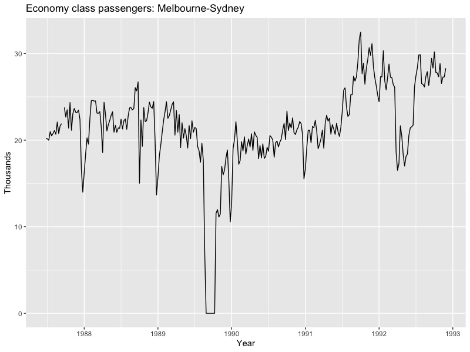
#autoplot可以自动生成合适的图表 autoplot(melsyd[,"Economy.Class"]) + ggtitle("Economy class passengers: Melbourne-Sydney") + xlab("Year") + ylab("Thousands")
由图片可以知道：
也有一些简单的时间序列图：
autoplot(a10) + ggtitle("Antidiabetic drug sales") + ylab("$ million") + xlab("Year")
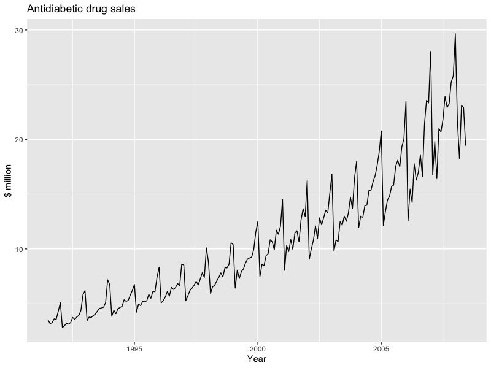
这是澳大利亚抗糖尿病药物的月销售额。显然这里的趋势是不断增长，每年年初的下降则与政府年初的补贴有关。
对于那些有季节性变化趋势的数据，我们可以将不同年份的数据进行对比，如上面的澳大利亚糖尿病药物数据：
ggseasonplot(a10, year.labels=TRUE, year.labels.left=TRUE) + ylab("$ million") + ggtitle("Seasonal plot: antidiabetic drug sales")
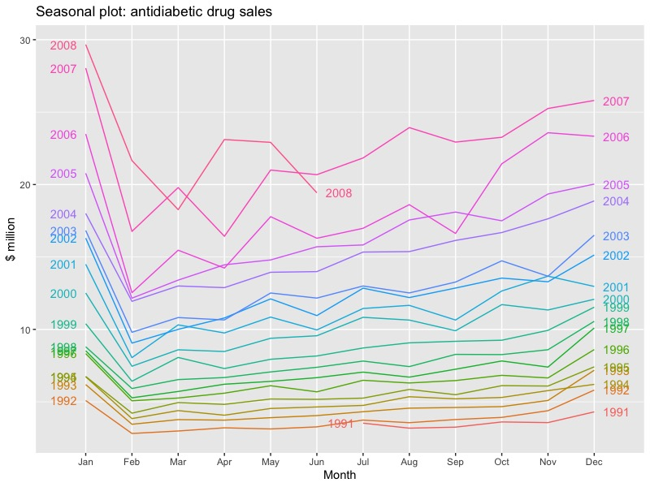
我们可以直观的观察到，在这种情况下，很明显，每年一月份的销售额都有很大的增长。实际上，这些可能是12月下旬的销售，因为客户在年末之前有库存，但是直到一两周后才向政府注册销售。该图还显示，2008年3月的销售额异常少（大多数其他年份显示2月至3月之间有所增长）。2008年6月的销售量很少，可能是由于在收集数据时对销售的计数不完整。
也许我们还可以用极坐标来显示：
ggseasonplot(a10, polar=TRUE) + ylab("$ million") + ggtitle("Polar seasonal plot: antidiabetic drug sales")
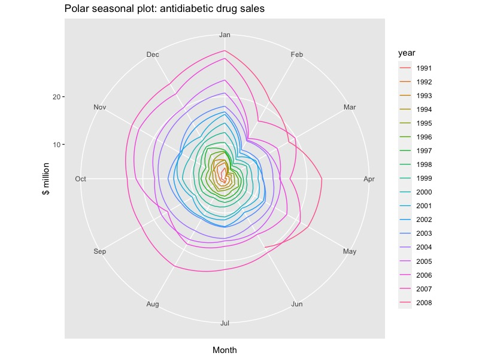
也可以把每个季节的数据搜集在一起来显示：
ggsubseriesplot(a10) + ylab("$ million") + ggtitle("Seasonal subseries plot: antidiabetic drug sales")
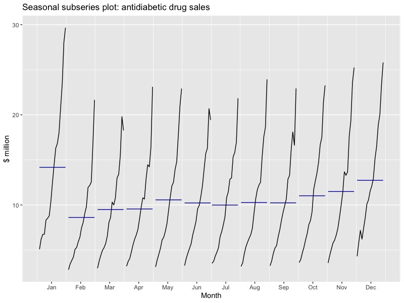
散点图可以探索不同因素的时间序列图像之间的关系。
下图显示了两个时间序列：澳大利亚维多利亚州2014年的半小时用电需求（千兆瓦）和温度（摄氏度）。温度是墨尔本（维多利亚州最大的城市）的温度，而需求值是整个州的温度。
autoplot(elecdemand[,c("Demand","Temperature")], facets=TRUE) + xlab("Year: 2014") + ylab("") + ggtitle("Half-hourly electricity demand: Victoria, Australia")
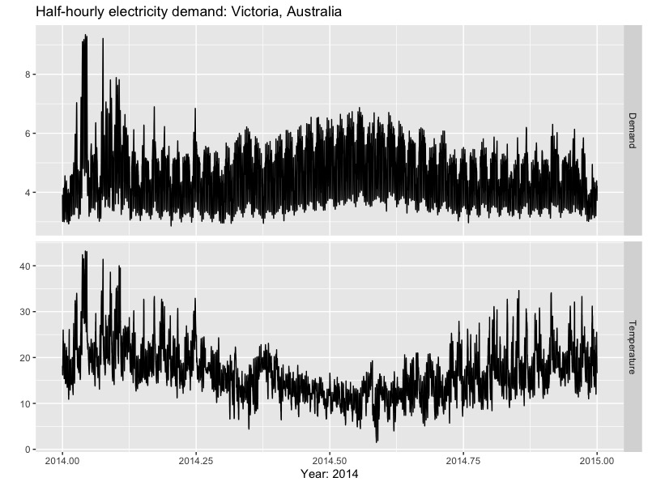
我们可以通过绘制一个序列与另一个序列的散点图来研究用电需求与温度之间的关系。
qplot(Temperature, Demand, data=as.data.frame(elecdemand)) + ylab("Demand (GW)") + xlab("Temperature (Celsius)")
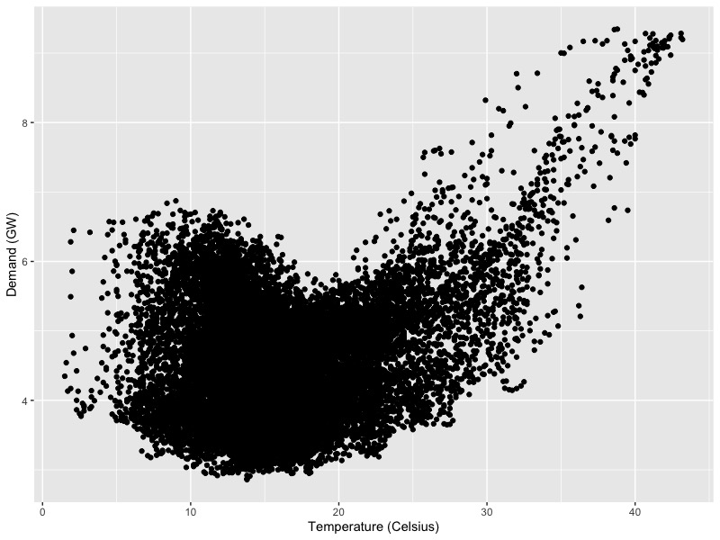
此散点图有助于我们可视化变量之间的关系。显然，由于空调的影响，当温度高时会出现高需求。但是相反的，对于非常低的温度，需求增加。
相关系数就是衡量两个变量之间是否是线性关系的一种手段，相关系数仅测量线性关系的强度，有时会产生误导，因此还需要查看数据图来获得更多详细结论。
散点图矩阵
当存在多个潜在的预测变量时，将每个变量相对于另一个变量作图很有用。下图显示了五个时间序列，该序列显示了澳大利亚新南威尔士州五个地区的季度访客人数。
autoplot(visnights[,1:5], facets=TRUE) + ylab("Number of visitor nights each quarter (millions)")
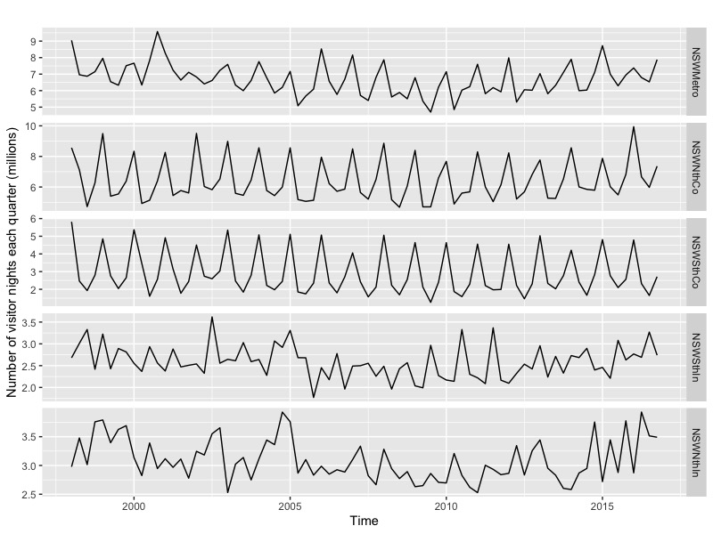
显示它们的散点图矩阵（需要GGally包）
GGally::ggpairs(as.data.frame(visnights[,1:5]))
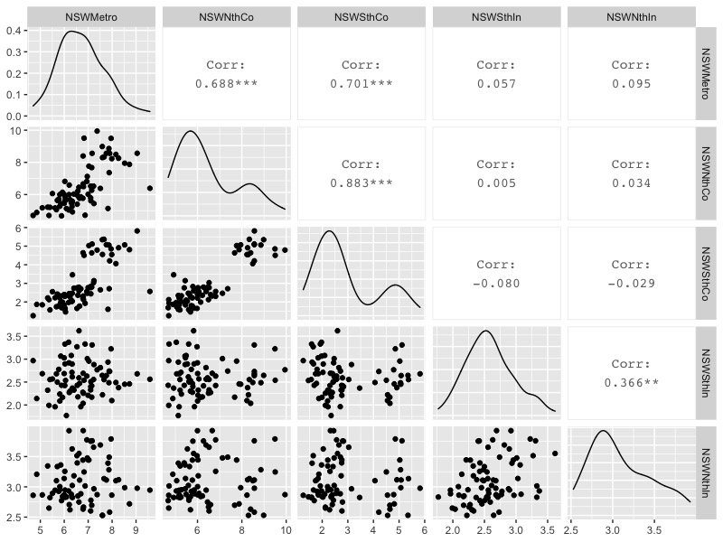
散点图矩阵的值是可以快速查看所有变量对之间的关系。在此示例中，曲线的第二列显示，新南威尔士州北部海岸的游客和新南威尔士州南部海岸的游客之间存在很强的正相关关系，但新南威尔士州北部海岸的游客和新南威尔士州南部内陆的游客之间没有可检测的关系。异常值也可以看到。新南威尔士州都会区有一个异常高的季度，与2000年悉尼奥运会相对应。
滞后嘛，就是滞后，比如5月数据一阶滞后后就算到4月里去了，那种意思。下图显示了澳大利亚啤酒季度产量的散点图，其中横轴显示了时间序列的滞后值。
beer2 <- window(ausbeer, start=1992) gglagplot(beer2)
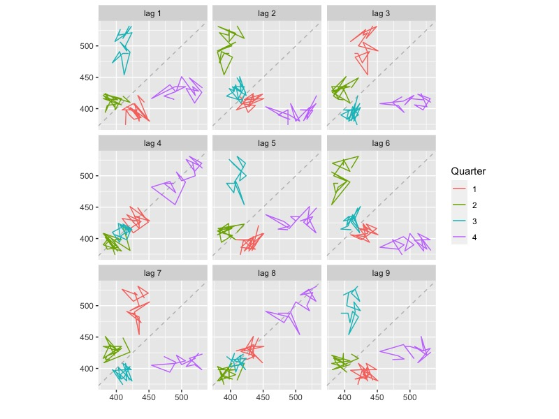
我们可以发现啤酒产量有4个月的滞后期，即生产4个月后可能才进入销售渠道。
自相关性度量时间序列的滞后值之间的线性关系，即数据是否自己有规律地变动。
对于上图中的九个散点图分别求相关系数可得其自相关情况。
ggAcf(beer2)
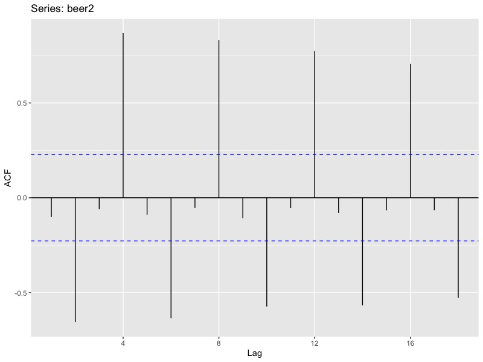
蓝色虚线外表示相关性是否显着不为零。
当数据具有趋势时，小的滞后的自相关往往会很大并且是正的，因为及时附近的观测值的大小也很近。因此，趋势时间序列的ACF倾向于具有正值，而正值随着滞后的增加而逐渐降低。
当数据是季节性的时，季节性滞后（以季节性频率的倍数）的自相关将大于其他滞后。
如澳大利亚每月电力需求及其自相关：
aelec <- window(elec, start=1980) autoplot(aelec) + xlab("Year") + ylab("GWh")
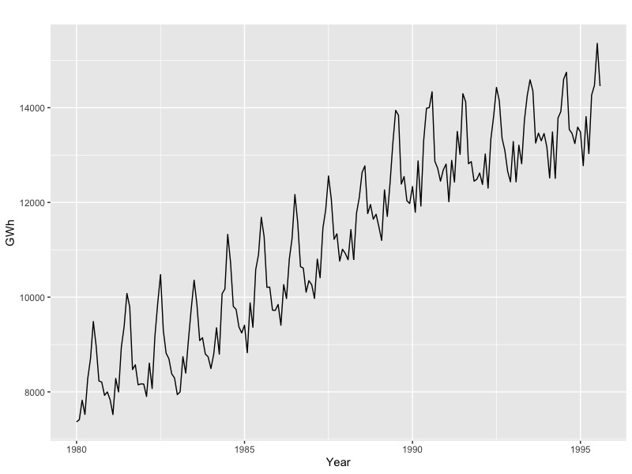
ggAcf(aelec, lag=48)
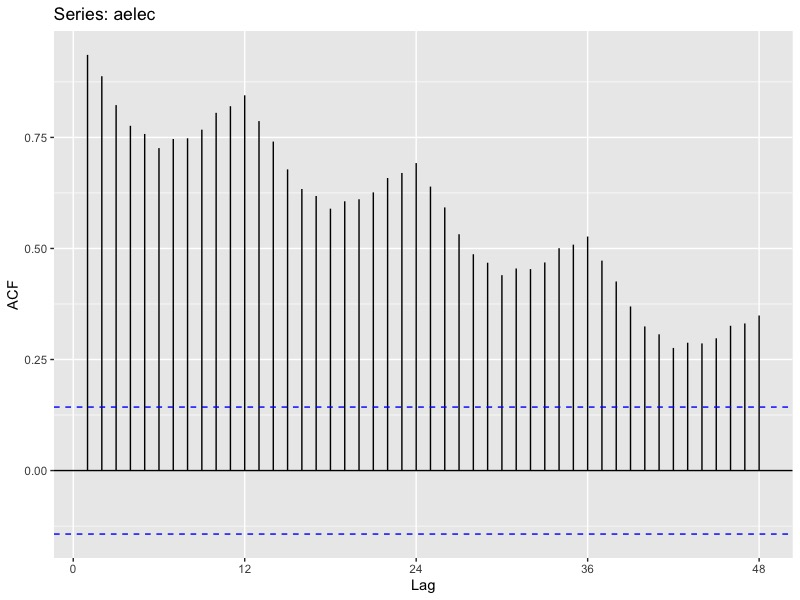
没有自相关的时间序列称为白噪声（R6里的white noise）
如：
set.seed(30) y <- ts(rnorm(50)) autoplot(y) + ggtitle("White noise")
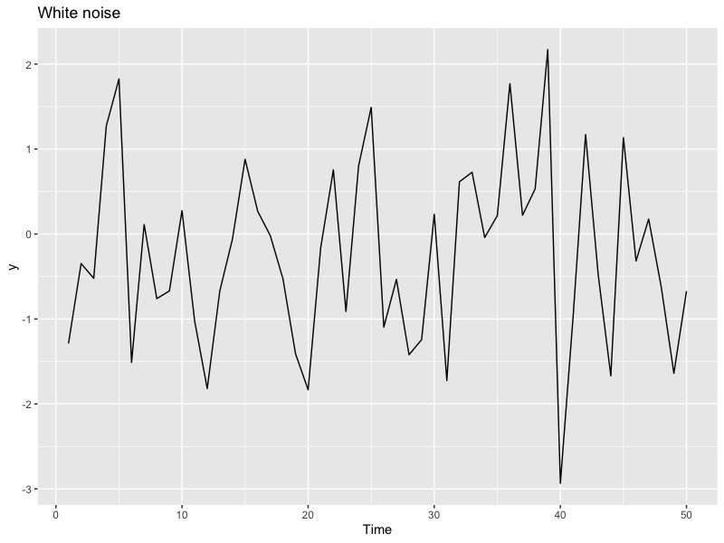
ggAcf(y)
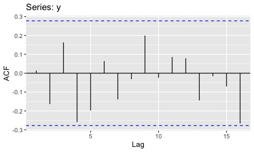
对于白噪声系列，我们希望每个自相关接近于零。当然，由于存在一些随机变化，它们将不完全等于零。对于白噪声系列，我们预计ACF中95％的尖峰位于内,其中是时间序列的长度。
meanf(y, h) # y contains the time series # h is the forecast horizon
naive(y, h) rwf(y, h) # Equivalent alternative
snaive(y, h)
rwf(y, h, drift=TRUE)
可以借此预测澳大利亚啤酒产量：
# Set training data from 1992 to 2007 beer2 <- window(ausbeer,start=1992,end=c(2007,4)) # Plot some forecasts autoplot(beer2) + autolayer(meanf(beer2, h=11), series="Mean", PI=FALSE) + autolayer(naive(beer2, h=11), series="Naïve", PI=FALSE) + autolayer(snaive(beer2, h=11), series="Seasonal naïve", PI=FALSE) + ggtitle("Forecasts for quarterly beer production") + xlab("Year") + ylab("Megalitres") + guides(colour=guide_legend(title="Forecast"))
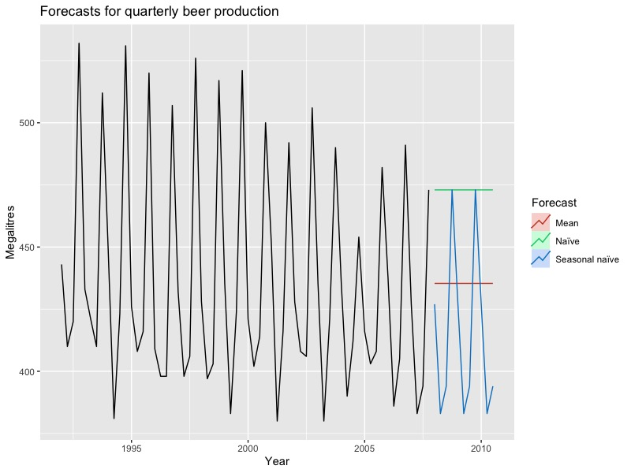
当然，这些方法都不是很靠谱。
monthdays可以消除因为每月日数不同而带来的差异。如下图中的每月数据因为每月日期不同而产生了“锯齿”。dframe <- cbind(Monthly = milk, DailyAverage = milk/monthdays(milk)) autoplot(dframe, facet=TRUE) + xlab("Years") + ylab("Pounds") + ggtitle("Milk production per cow")
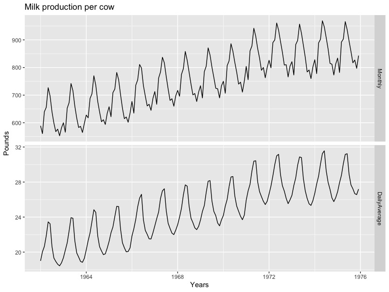
2. 人口调整，尽量使用人均数据而不是人数数据。
3. 通货膨胀调整，根据价格指数或者CPI进行调整。
4. 数字转换，幂变换等，BoxCox函数可以自动寻找一个合适的lambda进行幂变化。
(lambda <- BoxCox.lambda(elec)) #> [1] 0.2654 autoplot(BoxCox(elec,lambda))
biasadj=TRUE显示预测的平均数。fc <- rwf(eggs, drift=TRUE, lambda=0, h=50, level=80) fc2 <- rwf(eggs, drift=TRUE, lambda=0, h=50, level=80, biasadj=TRUE) autoplot(eggs) + autolayer(fc, series="Simple back transformation") + autolayer(fc2, series="Bias adjusted", PI=FALSE) + guides(colour=guide_legend(title="Forecast"))
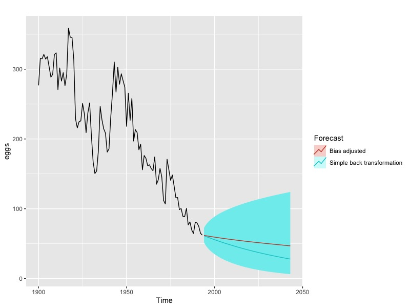
即为预测值与实际值的偏差。以谷歌股价为例，我们使用随机游走预测谷歌的股价，并计算它的残差。
绘制谷歌股价：
autoplot(goog200) + xlab("Day") + ylab("Closing Price (US$)") + ggtitle("Google Stock (daily ending 6 December 2013)")
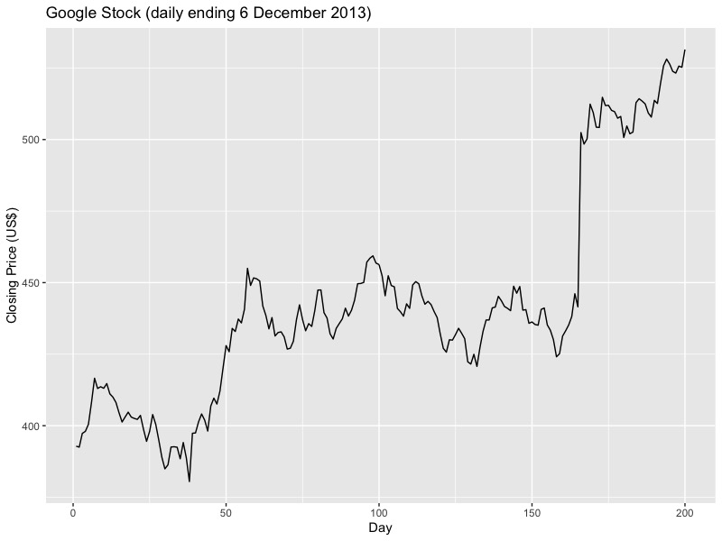
进行朴素预测：
autoplot(naive(goog200)) + xlab("Day") + ylab("Closing Price (US$)") ggtitle("Google Stock (daily ending 6 December 2013)")
计算残差,可以发现大的正残差是第166天意外价格上涨的结果。：
res <- residuals(naive(goog200)) autoplot(res) + xlab("Day") + ylab("") + ggtitle("Residuals from naïve method")
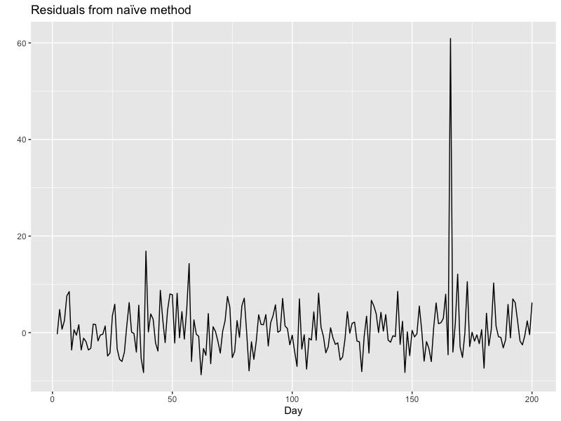
绘制残差直方图，右尾确实有点长：
gghistogram(res) + ggtitle("Histogram of residuals")
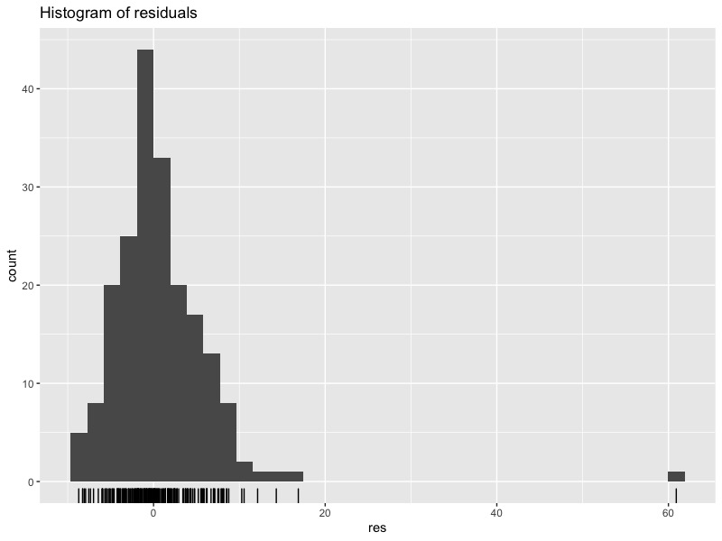
绘制ACF，可以认为缺乏相关性，因此预测结果不错
ggAcf(res) + ggtitle("ACF of residuals")
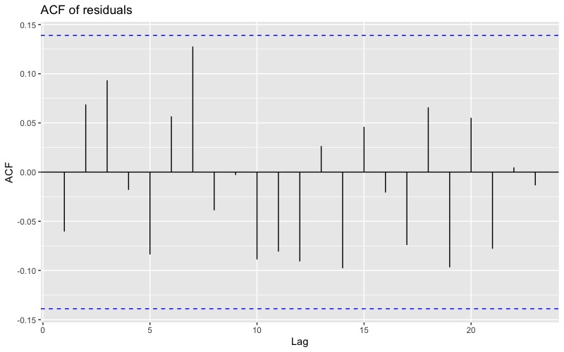
这些图表明，朴素的方法(随机游走)所产生的预测似乎可以说明所有可用信息。残差的平均值接近零，并且在残差序列中没有显着的相关性。残差的时间图显示，除一个异常值外，残差的变化在整个历史数据中保持几乎相同，因此残差方差可以视为恒定值。这也可以在残差的直方图中看到。直方图表明残差可能不正常-即使我们忽略异常值，右尾也似乎太长。因此，使用此方法进行的预测可能会很好，但是假设正态分布而计算出的预测区间可能不准确。
同时还可以进行Portmanteau自相关检验，包括Box-Pierce检验（Box.test(res, lag=10, fitdf=0)）和Ljung-Box测试（Box.test(res,lag=10, fitdf=0, type="Lj")），也可以用一个函数包搞定上面所有：checkresiduals(naive(goog200))。
需要将数据分为训练集与测试集进行评估，测试集通常为总样本的20%。我们在训练集上与结果的差称为残差，在测试集上则称为误差
可以使用window函数提取时间序列中的一部分作为子集。
#提取所有95年以后的数据 window(ausbeer, start=1995) #使用subset进行筛选，提取最近5年的观测值 subset(ausbeer, start=length(ausbeer)-4*5) #提取所有年份第一季度的值 subset(ausbeer, quarter = 1) #用tail提取后5年的值，或者用head提取前5年 tail(ausbeer, 4*5)
可以通过百分比误差（平均绝对百分比误差MAPE）和比例误差（平均绝对比例误差MASE）进行误差的衡量
首先我们对啤酒产量进行预测：
beer2 <- window(ausbeer,start=1992,end=c(2007,4)) beerfit1 <- meanf(beer2,h=10) beerfit2 <- rwf(beer2,h=10) beerfit3 <- snaive(beer2,h=10) autoplot(window(ausbeer, start=1992)) + autolayer(beerfit1, series="Mean", PI=FALSE) + autolayer(beerfit2, series="Naïve", PI=FALSE) + autolayer(beerfit3, series="Seasonal naïve", PI=FALSE) + xlab("Year") + ylab("Megalitres") + ggtitle("Forecasts for quarterly beer production") + guides(colour=guide_legend(title="Forecast"))
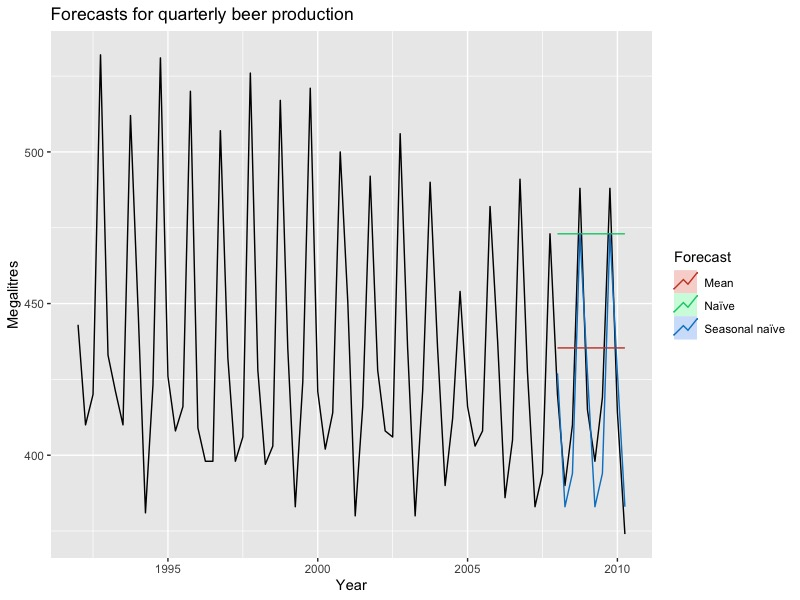
接着我们来看看它的准确性，显然，季节性随机游走预测比较好：
beer3 <- window(ausbeer, start=2008) accuracy(beerfit1, beer3) # ME RMSE MAE MPE MAPE #Training set 0.000 43.62858 35.23438 -0.9365102 7.886776 #Test set -13.775 38.44724 34.82500 -3.9698659 8.283390 # MASE ACF1 Theil's U #Training set 2.463942 -0.10915105 NA #Test set 2.435315 -0.06905715 0.801254 accuracy(beerfit2, beer3) # ME RMSE MAE MPE MAPE #Training set 0.4761905 65.31511 54.73016 -0.9162496 12.16415 #Test set -51.4000000 62.69290 57.40000 -12.9549160 14.18442 # MASE ACF1 Theil's U #Training set 3.827284 -0.24098292 NA #Test set 4.013986 -0.06905715 1.254009 accuracy(beerfit3, beer3) # ME RMSE MAE MPE MAPE MASE #Training set -2.133333 16.78193 14.3 -0.5537713 3.313685 1.0000000 #Test set 5.200000 14.31084 13.4 1.1475536 3.168503 0.9370629 # ACF1 Theil's U #Training set -0.2876333 NA #Test set 0.1318407 0.298728
训练/测试集的一个更复杂的版本是时间序列交叉验证。在此过程中，有一系列测试集，每个测试集包含一个观察值。由于结果随时间而变化，因此相应的训练集仅包含在形成测试集的观察之前发生的观察。因此将来的观察结果都不能用于构建预测。由于不可能基于小的训练集获得可靠的预测，因此最早的观察结果不被视为测试集。
预测准确性是通过对测试集进行平均计算得出的。此过程有时称为“滚动预测原点评估”，因为预测所基于的“原点”会及时向前滚动。
时间序列交叉验证是通过tsCV()函数实现的。在以下示例中，我们将通过时间序列交叉验证获得的RMSE与剩余的RMSE进行比较。
e <- tsCV(goog200, rwf, drift=TRUE, h=1) sqrt(mean(e^2, na.rm=TRUE)) #> [1] 6.233 sqrt(mean(residuals(rwf(goog200, drift=TRUE))^2, na.rm=TRUE)) #> [1] 6.169
不出所料，来自残差的RMSE较小，因为相应的“预测”基于适合整个数据集的模型，而不是真实的预测。
选择最佳预测模型的一个好方法是找到使用时间序列交叉验证计算出的最小RMSE的模型。
对谷歌股价进行朴素预测，并用tsCV()进行时间序列交叉验证：
e <- tsCV(goog200, forecastfunction=naive, h=8)
# Compute the MSE values and remove missing values
mse <- colMeans(e^2, na.rm = T)
# Plot the MSE values against the forecast horizon
data.frame(h = 1:8, MSE = mse) %>%
ggplot(aes(x = h, y = MSE)) + geom_point()
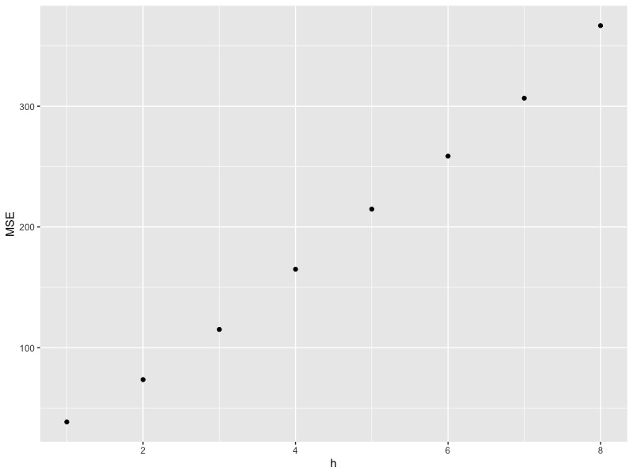
时间序列交叉验证表明，预测误差随着预测范围的增加而增加。
如果我们在预测参数中加入bootstrap=TRUE，就可以看到预测结果在不同的置信区间内的情况。
forecast()函数是主要的预测手段，其主要输入时间序列模型。其还有自动绘图功能autoplot()
判断性预测即指在没有历史数据的情况下进行预测，通常比较主观。
德尔菲认为群体的预测要比个体准确，因此他设计了一套流程：
找一些别的相似的例子，或是进行结构化类比：
其基本概念是我们要预测的感兴趣的时间序列假设它与其他变量的时间序列具有线性关系。
事前预测是仅使用预先提供的信息进行的预测。例如，对样本结束后每个季度美国消费百分比变化的事前预测，只能使用2016年第三季度之前（含）的可用信息。这些是真实的预测，使用当时可用的信息预先进行。因此，为了生成事前预测，模型需要预测变量的预测。为了获得这些，我们可以使用在节中介绍的简单的方法。可替代地，来自其他来源（例如政府机构）的预测可能可用并且可以使用。
事后预测是使用以后的预测因素信息进行的预测。例如，对消费量的事后预测可以使用对预测变量的实际观察，一旦观测到。这些不是真正的预测，但对于研究预测模型的行为很有用。
不应使用预测期间的数据来估计生成事后预测的模型。也就是说，事后预测可以假设您了解预测变量。
如研究美国消费支出：
我们认为和收入有关：
autoplot(uschange[,c("Consumption","Income")]) + ylab("% change") + xlab("Year")
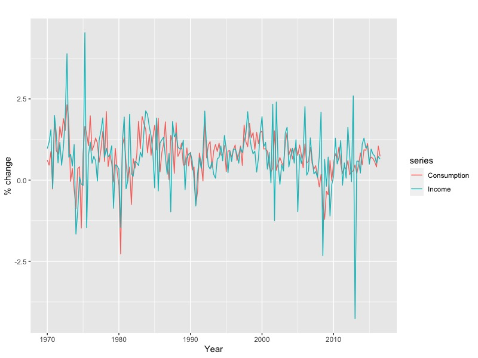
显然消费和支出有线性关系：
绘图：
uschange %>% as.data.frame() %>% ggplot(aes(x=Income, y=Consumption)) + ylab("Consumption (quarterly % change)") + xlab("Income (quarterly % change)") + geom_point() + geom_smooth(method="lm", se=FALSE) #> `geom_smooth()` using formula 'y ~ x'
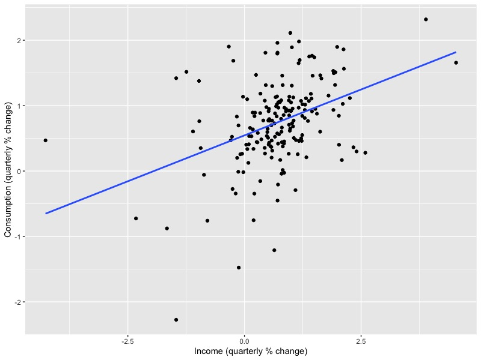
计算回归系数：
tslm(Consumption ~ Income, data=uschange) #> #> Call: #> tslm(formula = Consumption ~ Income, data = uschange) #> #> Coefficients: #> (Intercept) Income #> 0.545 0.281
当有两个以上的预测变量时，回归模型称为多元回归模型。如我们预测美国的消费支出和工业生产、个人储蓄、收入与失业率的关系：
uschange %>% as.data.frame() %>% GGally::ggpairs()
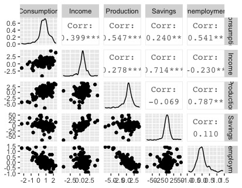
最小二乘原理提供了一种通过最小化平方误差之和来有效选择回归系数的方法。该tslm()函数将线性回归模型拟合到时间序列数据。它类似于lm()广泛用于线性模型的功能。
如还是上面的我美国的消费支出和工业生产、个人储蓄、收入与失业率的关系，通过tslm我们可以得到多元回归的系数：
fit.consMR <- tslm( Consumption ~ Income + Production + Unemployment + Savings, data=uschange) summary(fit.consMR) #> #> Call: #> tslm(formula = Consumption ~ Income + Production + Unemployment + #> Savings, data = uschange) #> #> Residuals: #> Min 1Q Median 3Q Max #> -0.8830 -0.1764 -0.0368 0.1525 1.2055 #> #> Coefficients: #> Estimate Std. Error t value Pr(>|t|) #> (Intercept) 0.26729 0.03721 7.18 1.7e-11 *** #> Income 0.71448 0.04219 16.93 < 2e-16 *** #> Production 0.04589 0.02588 1.77 0.078 . #> Unemployment -0.20477 0.10550 -1.94 0.054 . #> Savings -0.04527 0.00278 -16.29 < 2e-16 *** #> --- #> Signif. codes: #> 0 '***' 0.001 '**' 0.01 '*' 0.05 '.' 0.1 ' ' 1 #> #> Residual standard error: 0.329 on 182 degrees of freedom #> Multiple R-squared: 0.754, Adjusted R-squared: 0.749 #> F-statistic: 139 on 4 and 182 DF, p-value: <2e-16
根据多元回归的模型绘图并比较：
autoplot(uschange[,'Consumption'], series="Data") + autolayer(fitted(fit.consMR), series="Fitted") + xlab("Year") + ylab("") + ggtitle("Percent change in US consumption expenditure") + guides(colour=guide_legend(title=" "))
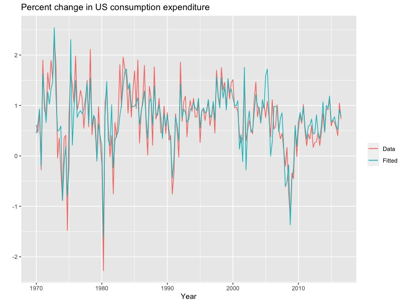
cbind(Data = uschange[,"Consumption"], Fitted = fitted(fit.consMR)) %>% as.data.frame() %>% ggplot(aes(x=Data, y=Fitted)) + geom_point() + ylab("Fitted (predicted values)") + xlab("Data (actual values)") + ggtitle("Percent change in US consumption expenditure") + geom_abline(intercept=0, slope=1)
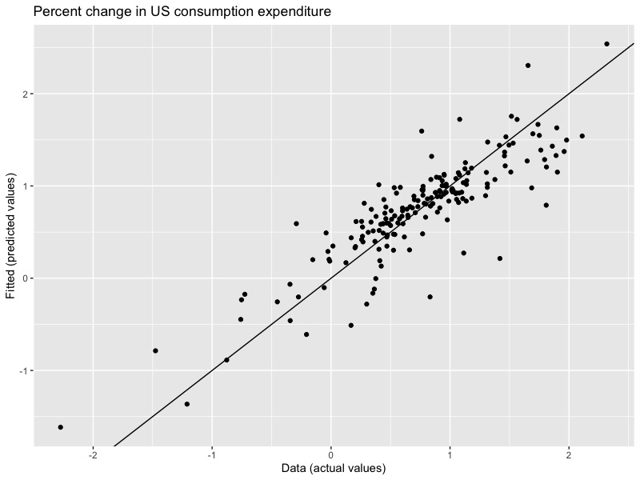
接下来我们可以评估该结果：
checkresiduals(fit.consMR) # Breusch-Godfrey test for serial correlation of order up to # 8 # #data: Residuals from Linear regression model #LM test = 14.874, df = 8, p-value = 0.06163
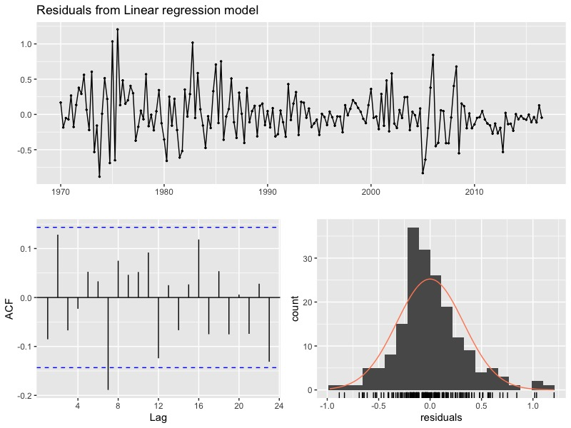
我们希望残差被随机分散而不显示任何系统模式。一种简单快速的检查方法是针对每个预测变量检查残差的散点图。如果这些散点图显示了一种模式，则该关系可能是非线性的，因此需要相应地修改模型:
df <- as.data.frame(uschange) df[,"Residuals"] <- as.numeric(residuals(fit.consMR)) p1 <- ggplot(df, aes(x=Income, y=Residuals)) + geom_point() p2 <- ggplot(df, aes(x=Production, y=Residuals)) + geom_point() p3 <- ggplot(df, aes(x=Savings, y=Residuals)) + geom_point() p4 <- ggplot(df, aes(x=Unemployment, y=Residuals)) + geom_point() gridExtra::grid.arrange(p1, p2, p3, p4, nrow=2)
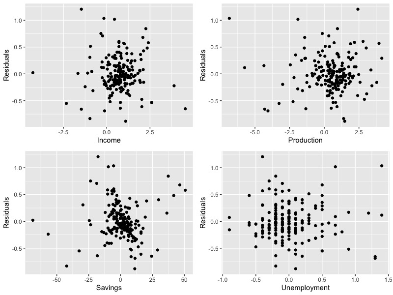
许多时候我们的变量也许并不是连续的数值，而是诸如是/否或者是季节，我们可以设置一个虚拟变量，该变量包含两个数：0和1...对于季节：春夏秋冬，我们应该设置3个虚拟变量，春（0和1），夏（0和1），秋（0和1），当春夏秋都为0时自然就是冬天...
我们也可以设置一些干预变量，干预变量时仅仅在某些特定时期起很大作用的变量，一般而言，在干预时为1，在其他时期为0。而对于交易日来说也可以用这种方法，或者使用bizdays()函数过滤月度或季度的交易日数据。
提供了CV函数包可以计算各种变量是否准确：
CV(fit.consMR) #> CV AIC AICc BIC AdjR2 #> 0.1163 -409.2980 -408.8314 -389.9114 0.7486
在可能的情况下，应拟合所有潜在的回归模型（如上述示例中所述），并应根据所讨论的一种方法选择最佳模型。这称为“最佳子集”回归或“所有可能的子集”回归。
如果存在大量预测变量，则不可能拟合所有可能的模型。这时可以采取逐步回归的手法，特别是向后逐步回归，这可以一直迭代到回归效果没有进一步改善位置。
tips：不建议在预测中使用二次或更高阶趋势。对其进行推断时，得出的预测通常是不现实的。如研究波士顿马拉松比赛获胜时间：
h <- 10 fit.lin <- tslm(marathon ~ trend) fcasts.lin <- forecast(fit.lin, h = h) fit.exp <- tslm(marathon ~ trend, lambda = 0) fcasts.exp <- forecast(fit.exp, h = h) t <- time(marathon) t.break1 <- 1940 t.break2 <- 1980 tb1 <- ts(pmax(0, t - t.break1), start = 1897) tb2 <- ts(pmax(0, t - t.break2), start = 1897) fit.pw <- tslm(marathon ~ t + tb1 + tb2) t.new <- t[length(t)] + seq(h) tb1.new <- tb1[length(tb1)] + seq(h) tb2.new <- tb2[length(tb2)] + seq(h) newdata <- cbind(t=t.new, tb1=tb1.new, tb2=tb2.new) %>% as.data.frame() fcasts.pw <- forecast(fit.pw, newdata = newdata) fit.spline <- tslm(marathon ~ t + I(t^2) + I(t^3) + I(tb1^3) + I(tb2^3)) fcasts.spl <- forecast(fit.spline, newdata = newdata) autoplot(marathon) + autolayer(fitted(fit.lin), series = "Linear") + autolayer(fitted(fit.exp), series = "Exponential") + autolayer(fitted(fit.pw), series = "Piecewise") + autolayer(fitted(fit.spline), series = "Cubic Spline") + autolayer(fcasts.pw, series="Piecewise") + autolayer(fcasts.lin, series="Linear", PI=FALSE) + autolayer(fcasts.exp, series="Exponential", PI=FALSE) + autolayer(fcasts.spl, series="Cubic Spline", PI=FALSE) + xlab("Year") + ylab("Winning times in minutes") + ggtitle("Boston Marathon") + guides(colour = guide_legend(title = " "))
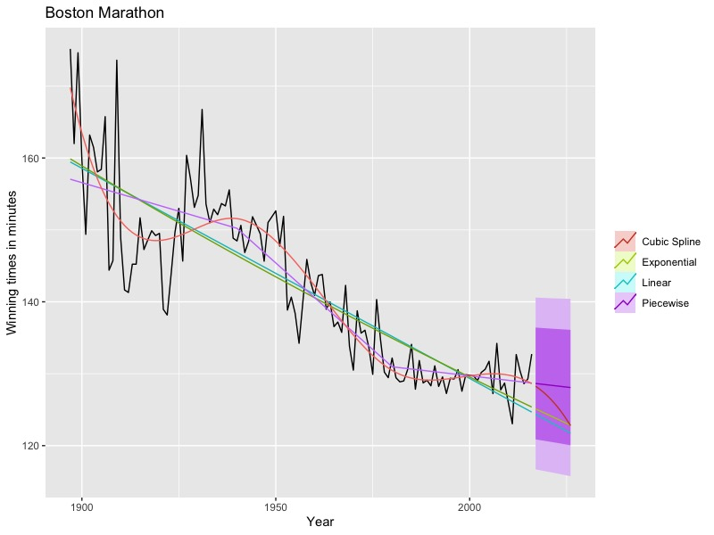
上面的图显示了拟合线和来自线性，指数，分段线性和三次样条曲线趋势的预测。最好的预测似乎来自分段线性趋势，而三次样条曲线最适合历史数据，但预测较差。
三次样条曲线的另一种表示形式（称为自然三次平滑样条曲线）具有一些约束，因此样条曲线函数的末尾是线性的，通常可以在不影响拟合的情况下提供更好的预测。
我们使用该splinef()函数来生成三次样条曲线预测。与我们在上图中使用的结相比，它使用了更多的结，但为防止过度拟合，系数受到限制，并且曲线的两端均为线性。这具有附加的优点，即结点选择不是主观的。我们还使用了对数转换（lambda=0）来处理异方差性。
marathon %>% splinef(lambda=0) %>% autoplot()
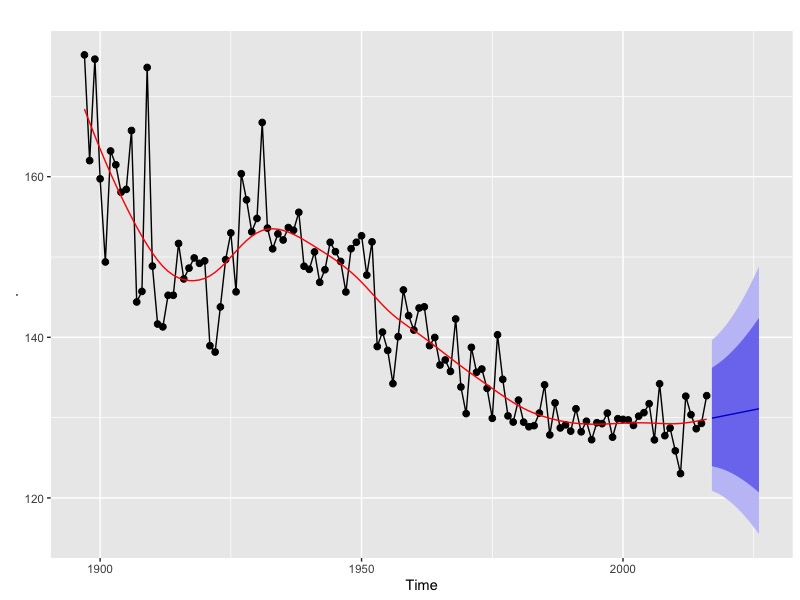
时间序列数据可以表现出各种模式，将时间序列划分为几个组成部分通常很有帮助，每个组成部分代表一个基础的模式类别。
我们已经讨论了三种时间序列模式：趋势，季节性和周期。当我们将时间序列分解为各个组成部分时，通常将趋势和周期组合为单个趋势周期性的组成。因此，我们认为时间序列包括三个部分：趋势周期部分，季节性部分和余下部分。组成如下：
为季节性因素，为趋势周期，为剩余部分。
移动平均值是一个最老也是最流行的技术分析工具。若依次得到一组测定值时，按顺序取一定数量的数据并算得其全部算术平均值，得到的数据就叫做移动平均值。移动平均的本质是一种低通滤波。它的目的是过滤掉时间序列中的高频扰动，保留有用的低频趋势。
式中。也就是说，t是通过k个周期内的时间序列的平均值来获得的。在时间上接近的观测值也可能在值上接近。因此，平均值消除了数据中的一些随机性，留下平滑的趋势周期成分。我们称之为m-MA，意思是m阶的移动平均值。
以下是南澳大利亚的用电销售状况
autoplot(elecsales) + xlab("Year") + ylab("GWh") + ggtitle("Annual electricity sales: South Australia")
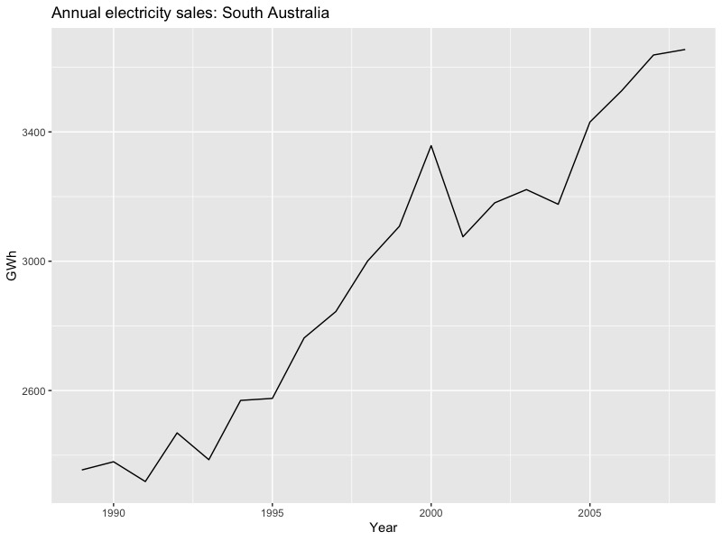
进行5阶平均：
ma(elecsales, 5)
绘制趋势周期图
autoplot(elecsales, series="Data") + autolayer(ma(elecsales,5), series="5-MA") + xlab("Year") + ylab("GWh") + ggtitle("Annual electricity sales: South Australia") + scale_colour_manual(values=c("Data"="grey50","5-MA"="red"), breaks=c("Data","5-MA"))
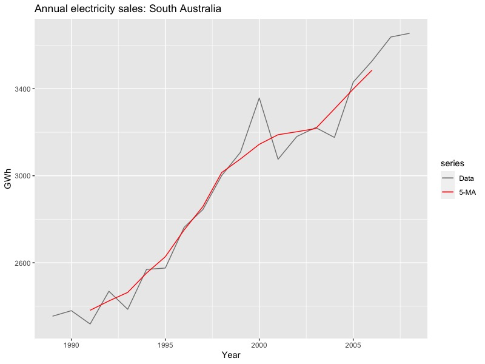
我们设置可以将移动平均的数据进行移动平均以获得更好的数据。
但这也有缺点：前几个和最后几个观察都无法获得趋势周期的估计值。
此方法基于经典分解，但是包括许多额外的步骤和功能，以克服上一部分中讨论的经典分解的缺点。特别是，趋势周期估计值可用于所有观测值（包括终点），并且季节性分量可以随时间缓慢变化。X11还具有一些复杂的方法来处理交易日变化，假日影响和已知预测因素的影响。它处理加法分解和乘法分解。该过程是完全自动的，并且对时间序列中的异常值和水平移位趋向于高度鲁棒。
R语言seasonal包中可以使用X11方法对电气设备订单数据进行分解：
library(seasonal) elecequip %>% seas(x11="") -> fit autoplot(fit) + ggtitle("X11 decomposition of electrical equipment index")
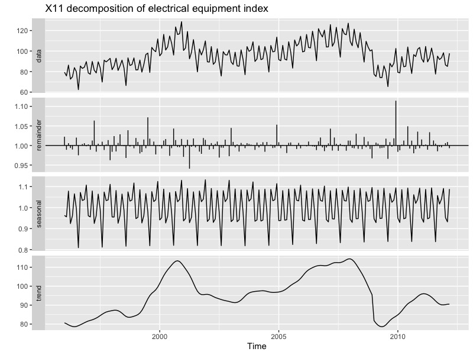
给定seas()函数的输出，seasonal()将提取季节性成分，trendcycle()将提取趋势周期成分，remainder()将提取余数成分，并seasadj()计算经季节性调整的时间序列。
下图显示了趋势周期分量和经季节性调整的数据以及原始数据：
autoplot(elecequip, series="Data") + autolayer(trendcycle(fit), series="Trend") + autolayer(seasadj(fit), series="Seasonally Adjusted") + xlab("Year") + ylab("New orders index") + ggtitle("Electrical equipment manufacturing (Euro area)") + scale_colour_manual(values=c("gray","blue","red"), breaks=c("Data","Seasonally Adjusted","Trend"))
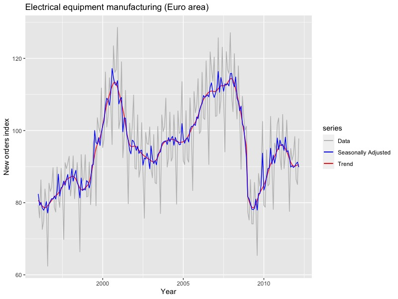
使用季节性部分的季节性图和季节性子系列图可能很有用。这些有助于我们直观地看到季节性成分随时间的变化。下图显示了上图中季节部分的季节子序列图。在这种情况下，随着时间的推移只有很小的变化。
fit %>% seasonal() %>% ggsubseriesplot() + ylab("Seasonal")
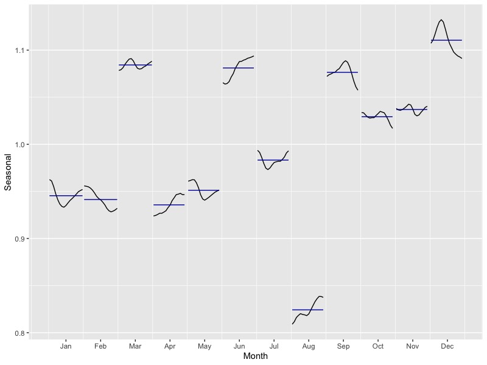
“SEATS”代表“ARIMA时间序列中的季节提取”。此程序是在西班牙银行开发的，现在已被世界各地的政府机构广泛使用。该过程仅适用于季度和月度数据。因此，其他类型的季节性，例如每日数据，每小时数据或每周数据，则需要另一种方法。下面还是对电气设备订单数据进行分解：
library(seasonal) elecequip %>% seas() %>% autoplot() + ggtitle("SEATS decomposition of electrical equipment index")
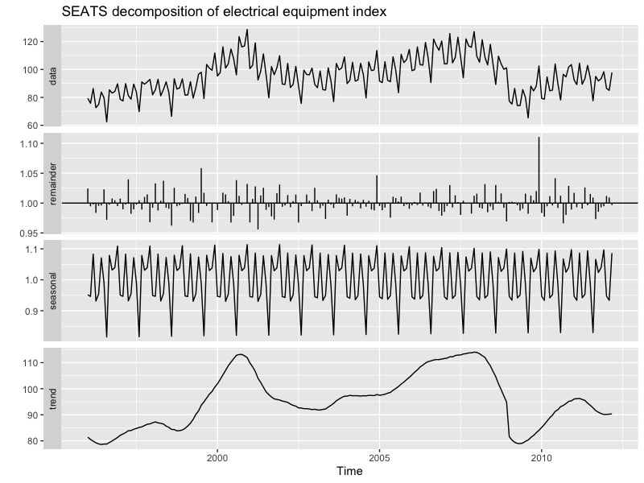
与X11的方法类似，我们可以使用seasonal()，trendcycle()和remainder()函数提取的各个组件，并通过seasadj()计算季节性调整的时间序列。
STL：使用局部加权回归进行季节与趋势分解。
还是对电气设备订单数据进行分解：
elecequip %>% stl(t.window=13, s.window="periodic", robust=TRUE) %>% autoplot()
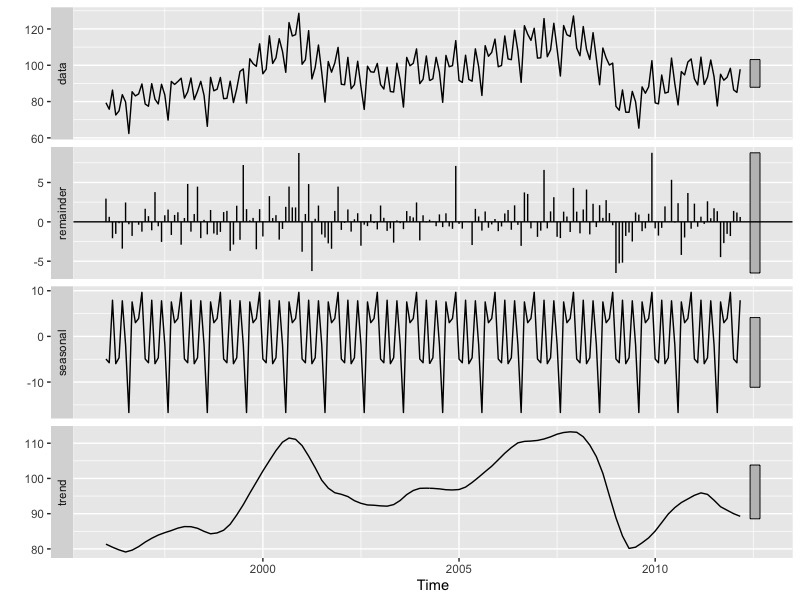
使用STL时要选择的两个主要参数是趋势周期窗口（t.window）和季节窗口（s.window）。这些控制着趋势周期和季节成分变化的速度。较小的值允许更快速的更改。t.window与s.window应该是奇数; t.window是在估计趋势周期时要使用的连续观察数；s.window是用于估计季节部分中每个值的连续年份。用户必须指定，s.window因为没有默认值。将其设置为无限等效于强制将季节性成分设置为周期性（即跨年相同）。指定t.window是可选的，如果省略，将使用默认值。
mstl()功能使用提供了便利的自动STL分解s.window=13，并且t.window也可以自动选择。通常，这可以在过度适应季节性和使其随时间缓慢变化之间取得良好的平衡。但是，与任何自动过程一样，默认设置需要针对某些时间序列进行调整。
与本书中讨论的其他分解方法一样，要获得单独成分的分析，请使用seasonal()季节性成分trendcycle()函数，趋势周期成分remainder()函数和其余成分函数。该seasadj()函数可用于计算季节性调整后的序列。
指数平滑法实际上是一种特殊的加权移动平均法。使用指数平滑方法生成的预测是过去观测值的加权平均值，并且随着观测值变老，权重呈指数衰减。换句话说，观察越近，相关的权重就越高。该框架可在广泛的时间范围内快速生成可靠的预测，这是一个巨大的优势，对工业应用至关重要。
自然地，最简单的指数平滑方法称为简单指数平滑（SES）。此方法适用于没有明确趋势或季节性模式的预测数据。
我们探索一下阿拉伯石油数据：
oildata <- window(oil, start=1996) autoplot(oildata) + ylab("Oil (millions of tonnes)") + xlab("Year")
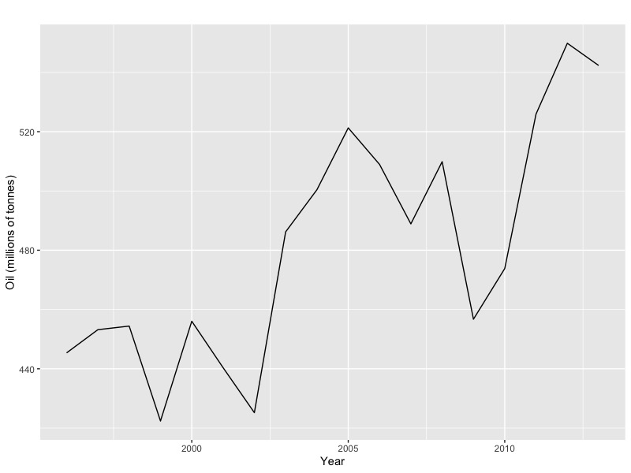
进行简单指数平滑：
oildata <- window(oil, start=1996) # Estimate parameters fc <- ses(oildata, h=5) # Accuracy of one-step-ahead training errors round(accuracy(fc),2) #> ME RMSE MAE MPE MAPE MASE ACF1 #> Training set 6.4 28.12 22.26 1.1 4.61 0.93 -0.03 autoplot(fc) + autolayer(fitted(fc), series="Fitted") + ylab("Oil (millions of tonnes)") + xlab("Year")
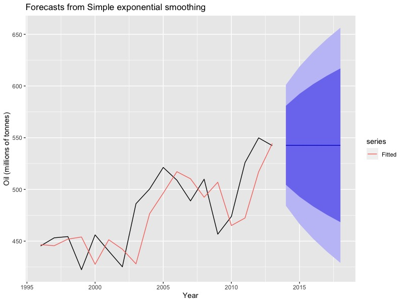
Holt线性趋势法，不再像以前一样预测出一条平行的直线，而是一条带有斜率的东西了。但Holt线性方法生成的预测在未来无限期地显示出恒定的趋势（增加或减少）。经验证据表明，这些方法倾向于过度预测，特别是对于较长的预测范围。受此观察的启发，Gardner＆McKenzie（1985）引入了一个参数，该参数在将来的某个时候将趋势“抑制”到一条平坦的线上。包含衰减趋势的方法被证明是非常成功的，并且可以说是当许多序列需要自动进行预测时最受欢迎的单个方法。
比如我们对澳大利亚航司载客量进行研究：
air <- window(ausair, start=1990) fc <- holt(air, h=15) fc2 <- holt(air, damped=TRUE, phi = 0.9, h=15) autoplot(air) + autolayer(fc, series="Holt's method", PI=FALSE) + autolayer(fc2, series="Damped Holt's method", PI=FALSE) + ggtitle("Forecasts from Holt's method") + xlab("Year") + ylab("Air passengers in Australia (millions)") + guides(colour=guide_legend(title="Forecast"))
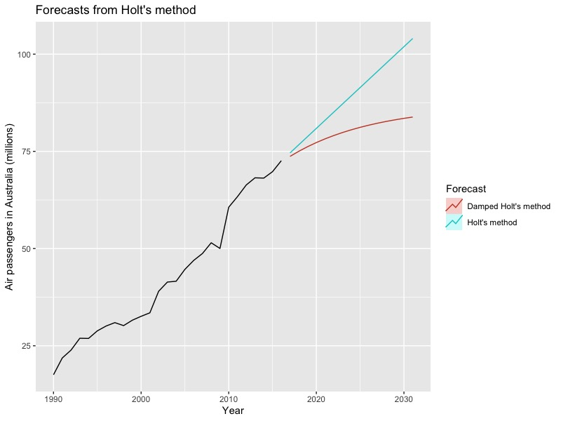
Holt-Winters季节性方法考虑了季节变化的影响。
如考察澳大利亚国际游客待的夜数：
aust <- window(austourists,start=2005) fit1 <- hw(aust,seasonal="additive") fit2 <- hw(aust,seasonal="multiplicative") autoplot(aust) + autolayer(fit1, series="HW additive forecasts", PI=FALSE) + autolayer(fit2, series="HW multiplicative forecasts", PI=FALSE) + xlab("Year") + ylab("Visitor nights (millions)") + ggtitle("International visitors nights in Australia") + guides(colour=guide_legend(title="Forecast"))
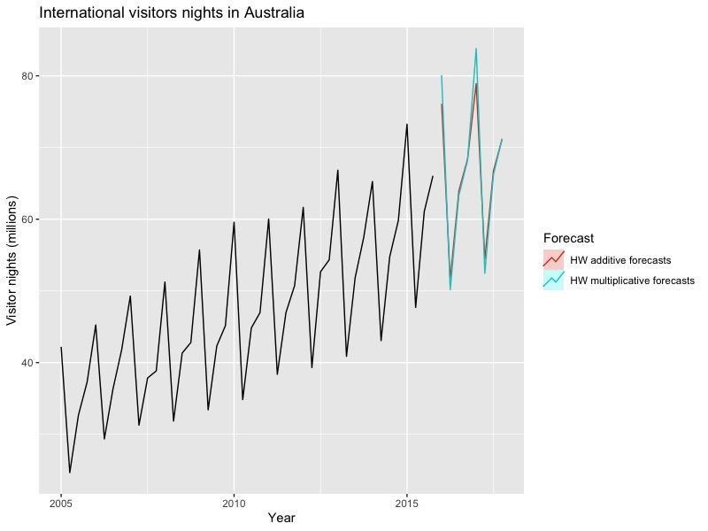
这也有一种阻尼法，可以具有衰减的趋势：
hw(y, damped=TRUE, seasonal="multiplicative")
如研究Hyndsight博客自2014年4月30日起一年的每日综合浏览量：
fc <- hw(subset(hyndsight,end=length(hyndsight)-35), damped = TRUE, seasonal="multiplicative", h=35) autoplot(hyndsight) + autolayer(fc, series="HW multi damped", PI=FALSE)+ guides(colour=guide_legend(title="Daily forecasts"))
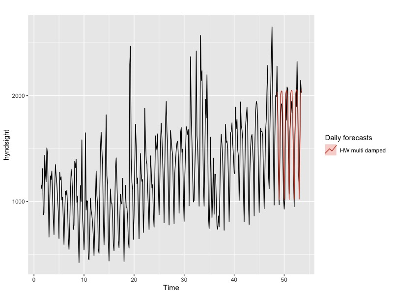
est函数可以进行模型的估计与选择：
ets(y, model="ZZZ", damped=NULL, alpha=NULL, beta=NULL, gamma=NULL, phi=NULL, lambda=NULL, biasadj=FALSE, additive.only=FALSE, restrict=TRUE, allow.multiplicative.trend=FALSE)
其中:
y
要预测的时间序列。
model
如果为damped=TRUE，则将使用阻尼趋势（A或M）。如果为damped=FALSE，则将使用非阻尼趋势。如果damped=NULL（默认），则将选择阻尼趋势还是非阻尼趋势，具体取决于哪个模型的信息标准值最小。
alpha, beta, gamma, phi
可以使用这些参数指定平滑参数的值。如果将它们设置为NULL（每个参数的默认设置），则会估计参数。
lambda
Box-Cox转换参数。如果lambda=NULL（默认值），它将被忽略。否则，将在估计模型之前对时间序列进行转换。如果lambda不是NULL，additive.only设置为TRUE。
biasadj
如果TRUE和lambda不是NULL，则将对反向转换后的拟合值和预测进行偏差调整。
additive.only
如果仅考虑具有加性成分的模型additive.only=TRUE。否则，将考虑所有模型。
restrict
如果为restrict=TRUE（默认值），则在模型选择中不考虑引起数值困难的模型。
allow.multiplicative.trend
也可以使用乘法趋势模型，但本次不做介绍。将此参数设置TRUE为允许考虑这些模型。
那么，如何处理ets对象呢？
该ets()函数将返回class的对象ets。有许多R函数旨在简化ets对象的处理。其中一些描述如下。
coef()返回所有拟合的参数。
accuracy()返回根据训练数据计算出的准确性测度。
summary()打印有关拟合模型的一些摘要信息。
autoplot() 和 plot()生成组件的时间图。
residuals()从估计的模型返回残差。
fitted()返回训练数据的一步预测。
simulate()将从拟合模型中模拟将来的样本路径。
forecast()计算点预测和预测区间，如下一节所述。
使用该ets()功能，默认的估计方法是最大似然而不是最小平方和。
我们可以基于此，结合上面的数据，再来使用ETS统计框架来预测2016-2019年期间国际入境游客在澳大利亚的游客住宿天数。
aust <- window(austourists, start=2005) fit <- ets(aust) summary(fit) #> ETS(M,A,M) #> #> Call: #> ets(y = aust) #> #> Smoothing parameters: #> alpha = 0.1908 #> beta = 0.0392 #> gamma = 2e-04 #> #> Initial states: #> l = 32.3679 #> b = 0.9281 #> s = 1.022 0.9628 0.7683 1.247 #> #> sigma: 0.0383 #> #> AIC AICc BIC #> 224.9 230.2 240.9 #> #> Training set error measures: #> ME RMSE MAE MPE MAPE MASE #> Training set 0.04837 1.671 1.25 -0.1846 2.693 0.4095 #> ACF1 #> Training set 0.2006
绘图：
autoplot(fit)
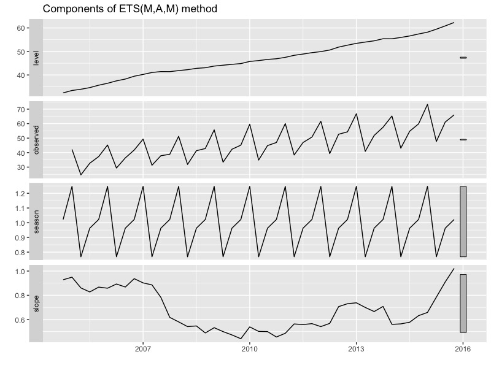
获得残差：
cbind('Residuals' = residuals(fit), 'Forecast errors' = residuals(fit,type='response')) %>% autoplot(facet=TRUE) + xlab("Year") + ylab("")
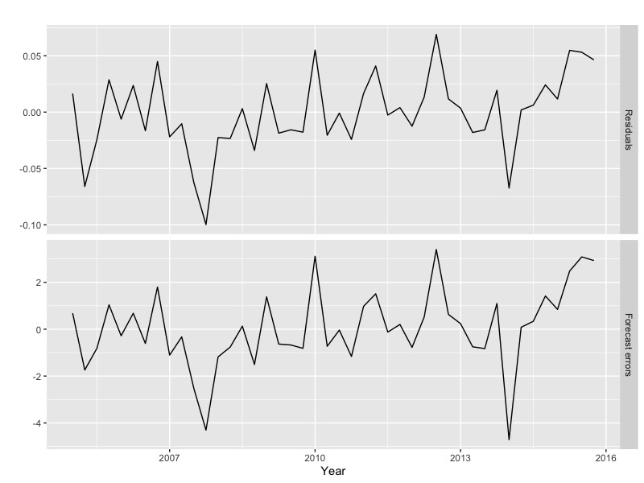
ETS点预测等于预测分布的中位数。对于仅具有加性成分的模型，预测分布为正态，因此中位数和均值相等。对于具有乘法误差或季节性乘积的ETS模型，点预测将不等于预测分布的均值。
为了从ETS模型获得预测，我们使用该forecast()函数。
fit %>% forecast(h=8) %>% autoplot() + ylab("International visitor night in Australia (millions)")
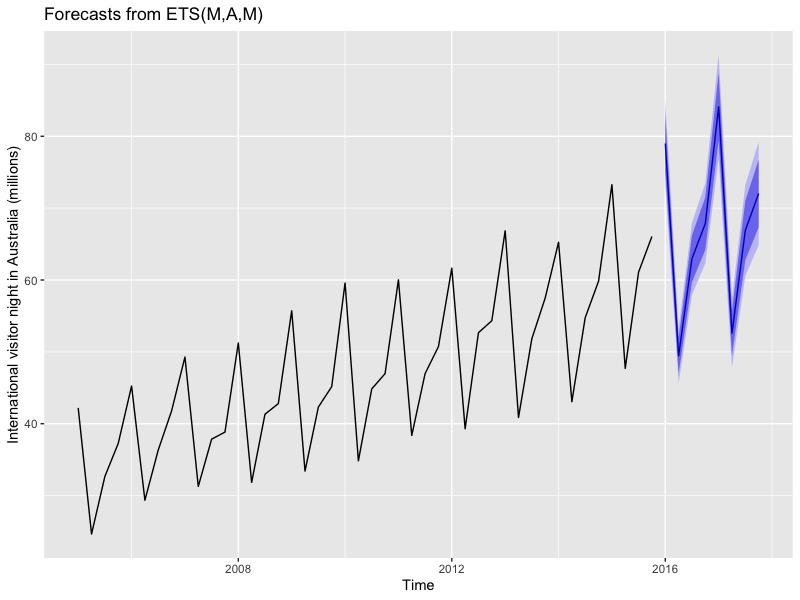
使用forecast函数进行预测的通式：
forecast(object, h=ifelse(object$m>1, 2*object$m, 10), level=c(80,95), fan=FALSE, simulate=FALSE, bootstrap=FALSE, npaths=5000, PI=TRUE, lambda=object$lambda, biasadj=NULL, ...)
object函数返回的对象ets()。
h预测范围-要预测的期间数。
level预测区间的置信度。
fan如果fan=TRUE，level=seq(50,99,by=1)。这适用于风扇图。
simulate如果为simulate=TRUE，则预测区间是通过模拟而不是使用代数公式生成.simulate=FALSE在没有适用于特定模型的代数公式的情况下，也将使用仿真（即使是）。
bootstrap如果bootstrap=TRUE和simulate=TRUE，则模拟的预测区间使用重新采样的误差而不是正态分布的误差。
npaths计算模拟的预测区间时使用的样本路径数。
PI如果为PI=TRUE，则产生预测区间；否则仅计算点预测。
lambdaBox-Cox转换参数。如果忽略此选项lambda=NULL。否则，将通过逆Box-Cox逆变换对预测进行反变换。
biasadj如果lambda不是NULL，则对逆变换的预测（和预测区间）进行偏差调整。
时间序列是指将同一统计指标的数值按其先后发生的时间顺序排列而成的数列。时间序列分析的主要目的是根据已有的历史数据对未来进行预测。常用的时间序列模型有四种：自回归模型 AR(p)、移动平均模型 MA(q)、自回归移动平均模型 ARMA(p,q)、自回归差分移动平均模型 ARIMA(p,d,q), 可以说前三种都是 ARIMA(p,d,q)模型的特殊形式，其中p为自相关系数，q为平均移动系数，
ARIMA 模型是在平稳的时间序列基础上建立起来的，因此时间序列的平稳性是建模的重要前提。检验时间序列模型平稳的方法一般采用 ADF 单位根检验模型去检验。当然如果时间序列不稳定，也可以通过一些操作去使得时间序列稳定（比如取对数，差分），然后进行 ARIMA 模型预测，得到稳定的时间序列的预测结果，然后对预测结果进行之前使序列稳定的操作的逆操作（取指数，差分的逆操作），就可以得到原始数据的预测结果。
一般而言会运用到差分法，即时间序列在t与t-1时刻的差值。差分（d）：现在数列=现时刻数值-前一时刻数值，也就是本时刻与前一时刻的差值作为新的数列，可以让数列更加平稳，数据.diff(1)代表数据与前一时刻的差值
P阶自回归：
其中是当前值，是常数项，是阶数，是自相关系数。
自回归简单来说就是当前值只与历史值有关。p阶自回归就是当前值与前p个值有关，求常数与自回归系数。
在多元回归模型中，我们使用预测变量的线性组合来预测目标变量。在自回归模型中，我们使用变量的过去值的线性组合来预测目标变量。术语自动回归表示它是变量相对于自身的回归。
自回归模型的限制：
q阶移动平均：
其中q为移动平均项数，q阶与前q个误差有关。
移动平均模型关注的是自回归模型中的误差项的累加，移动平均法能有效地消除预测中的随机波动。移动平均模型不是在回归中使用预测变量的过去值，而是在类似回归的模型中使用过去的预测误差。移动平均模型不应与我们在之前中讨论过的移动平均平滑处理混淆。我们一般使用移动平均模型来预测未来值，而使用移动平均平滑来估计过去值的趋势周期。
ARIMA模型称为差分自回归移动平均模型。
其中AR就是自回归，p为自回归项，MA就是移动平均，q为移动平均项数，d为时间序列成为平稳时所做的差分次数。
公式为：
其原理是将非平稳时间序列转化为平稳时间序列；然后将因变量仅对它的滞后值以及随机误差项的现值和滞后值进行回归所建立的模型。
将差分与自回归和移动平均模型相结合，则将获得非季节性的ARIMA模型。ARIMA是AutoRegressive集成移动平均线的首字母缩写（在这种情况下，“积分”是差分的反面）。称模型。为自回归的顺序，为所涉及的第一次差异程度，为移动平均线部分的顺序。
白噪声为ARIMA(0,0,0)，随机漫步为ARIMA(0,1,0)且没有常数，带漂移项的随机游走为ARIMA（0,1,0）且具有常数，自回归 为ARIMA(p,0,0)，移动平均为ARIMA(0,0,q)
我们研究一下美国消费支出的季度百分比：
autoplot(uschange[,"Consumption"]) + xlab("Year") + ylab("Quarterly percentage change")
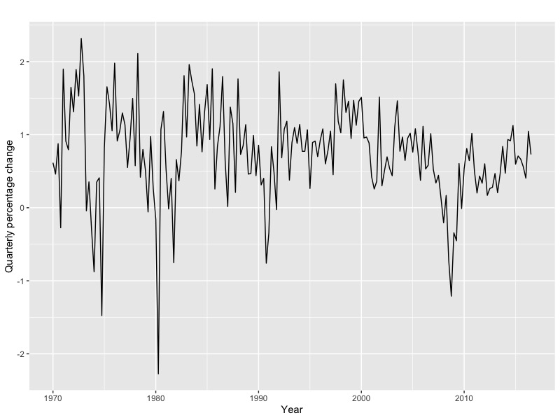
以下R代码用于自动选择模型:
fit <- auto.arima(uschange[,"Consumption"], seasonal=FALSE) #Series: uschange[, "Consumption"] #ARIMA(1,0,3) with non-zero mean # #Coefficients: # ar1 ma1 ma2 ma3 mean # 0.5885 -0.3528 0.0846 0.1739 0.7454 #s.e. 0.1541 0.1658 0.0818 0.0843 0.0930 # #sigma^2 estimated as 0.3499: log likelihood=-164.81 #AIC=341.61 AICc=342.08 BIC=361
这是ARIMA（1,0,3）模型：
这里，通式是白噪声，标准差为，
进行预测：
fit %>% forecast(h=10) %>% autoplot(include=80)
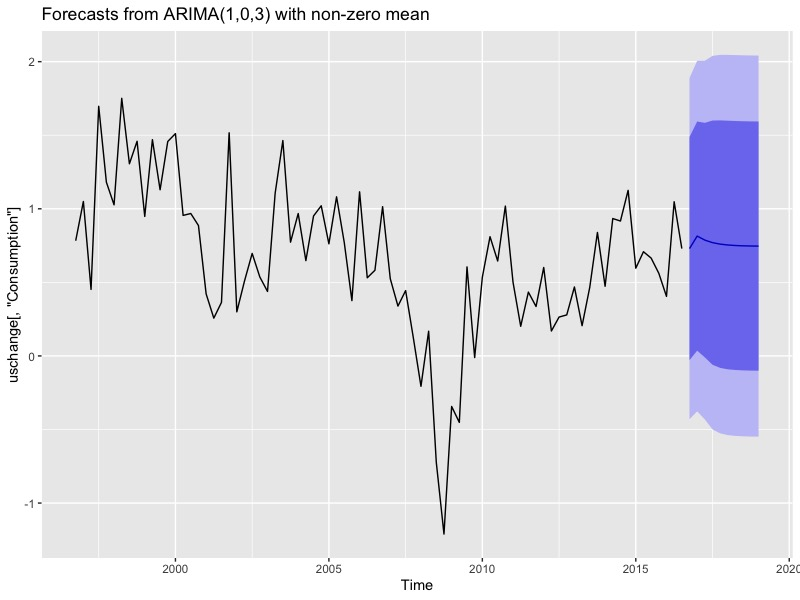
该auto.arima()功能很有用，但是任何自动化操作都可能会有些危险，即使您依靠自动过程为您选择模型，也值得了解模型的某些行为。
常数C对从这些模型获得的长期预测具有重要影响。
如果C=0且d=0，则长期预测将为零。
如果C=0和d=1，则长期预测将变为非零常数。
如果C=0和d=2，则长期预测将遵循一条直线。
如果C≠0且d=0，则长期预测将取数据的平均值。
如果C≠0且d=1，则长期预测将遵循一条直线。
如果C≠0且d=2，则长期预测将遵循二次趋势。
d对预测区间也有影响：d值越高，预测区间的大小增长越快。对于d=0，则长期预测标准差将变为历史数据的标准差，因此预测区间将基本相同。
通常仅凭时间图就不可能知道p和q是否适用于数据。但是，有时可以使用ACF图和密切相关的PACF图来确定p和q。
如对美国消费图进行测试：
ggAcf(uschange[,"Consumption"])
ggPacf(uschange[,"Consumption"])
如果数据来自或模型，则ACF和PACF图可以帮助确定p或q：
如果p和q都是正的，那么这些图就无助于找到合适的p和q。
如果差异数据的ACF和PACF图显示以下模式，数据可能遵循建模：ACF呈指数衰减或正弦曲线；滞后有明显的峰值p在PACF中，但没有滞后p。
如果差异数据的ACF和PACF图显示以下模式，那么数据可以遵循模型：PACF呈指数衰减或正弦曲线；滞后在ACF中有明显的峰值q，但没有滞后q。
或者说：
如果ACF的衰减趋于0（几何型或震荡型）且PACFp阶后截尾，则使用AR(p)
如果ACFq阶后截尾且PACF的衰减趋于0（几何型或震荡型），则使用MA(q)
如果ACF的衰减趋于0（几何型或震荡型）且PACF的衰减趋于0（几何型或震荡型），则使用ARMA(p,q)
根据上图的ACF，我们看到ACF中出现三个尖峰，随后在滞后4处出现了一个明显的尖峰。在PACF中，出现了三个显着尖峰，然后此后没有任何明显的尖峰（除了位于边界范围外的一个尖峰）。如果每个曲线都在极限范围内，而不是在最初的几个滞后中，我们可以忽略每个曲线中的一个明显的峰值。毕竟，突然出现尖峰的概率约为二十分之一，我们在每个图中绘制了22个尖峰。前三个峰值中的模式是ARIMA（3,0,0）所期望的，因为PACF趋于减少。因此，在这种情况下，ACF和PACF导致我们认为ARIMA（3,0,0）模型可能是合适的。
(fit2 <- Arima(uschange[,"Consumption"], order=c(3,0,0))) #> Series: uschange[, "Consumption"] #> ARIMA(3,0,0) with non-zero mean #> #> Coefficients: #> ar1 ar2 ar3 mean #> 0.227 0.160 0.203 0.745 #> s.e. 0.071 0.072 0.071 0.103 #> #> sigma^2 estimated as 0.349: log likelihood=-165.2 #> AIC=340.3 AICc=340.7 BIC=356.5
该模型实际上比所标识的模型稍好auto.arima()（AICc值为340.67，而342.08）。该auto.arima()函数找不到此模型，因为它没有在搜索中考虑所有可能的模型。您可以使用参数stepwise=FALSE和来使其更有效率地工作approximation=FALSE：
(fit3 <- auto.arima(uschange[,"Consumption"], seasonal=FALSE, stepwise=FALSE, approximation=FALSE)) #> Series: uschange[, "Consumption"] #> ARIMA(3,0,0) with non-zero mean #> #> Coefficients: #> ar1 ar2 ar3 mean #> 0.227 0.160 0.203 0.745 #> s.e. 0.071 0.072 0.071 0.103 #> #> sigma^2 estimated as 0.349: log likelihood=-165.2 #> AIC=340.3 AICc=340.7 BIC=356.5
我们还可以使用该参数seasonal=FALSE来防止它搜索季节性ARIMA模型。
需要在ARIMA(p,d,q)后加一个(P,D,Q)12来表示季节的循环，这个12表示在PACF的滞后12出现一个明显的峰值。后面的(P,D,Q)可以模拟ACF季节滞后的指数衰减。
如我们模拟欧洲季度零售贸易数据：
autoplot(euretail) + ylab("Retail index") + xlab("Year")
数据显然是不稳定的，具有一定的季节性，因此我们先考察季节性差异：
euretail %>% diff(lag=4) %>% ggtsdisplay()
euretail %>% diff(lag=4) %>% diff() %>% ggtsdisplay()
接下来根据ACF和PACF找到合适的ARIMA模型，ACF的滞后1处的显着尖峰表明非季节性MA(1)分量，ACF的滞后4处的显着尖峰表明存在季节性MA(1)分量。因此模型可以写为ARIMA(1,1,0)(1,1,0)4，加下来进行拟合：
euretail %>% Arima(order=c(0,1,1), seasonal=c(0,1,1)) %>% residuals() %>% ggtsdisplay()
ACF和PACF都在滞后2处显示出明显的峰值，而在滞后3处显示出明显的峰值，这表明模型中还需要包含一些其他非季节性项。ARIMA(0,1,2)(0,1,1)4的AICc是74.36，而ARIMA(0,1,3)(0,1,1)是68.53。我们还尝试了其他带有AR值的模型，但没有一个模型给出较小的AICc值。因此，我们选择ARIMA(0,1,3)(0,1,1)4
模型。其残差绘制在下中。现在所有的尖峰都在有效范围内，因此残差似乎是白噪声。Ljung-Box测试还显示残差没有剩余的自相关。
fit3 <- Arima(euretail, order=c(0,1,3), seasonal=c(0,1,1)) checkresiduals(fit3) # Ljung-Box test # #data: Residuals from ARIMA(0,1,3)(0,1,1)[4] #Q* = 0.51128, df = 4, p-value = 0.9724 # #Model df: 4. Total lags used: 8 Ljung-Box test # #data: Residuals from ARIMA(0,1,3)(0,1,1)[4] #Q* = 0.51128, df = 4, p-value = 0.9724 # #Model df: 4. Total lags used: 8
因此，我们现在有了一个季节性的ARIMA模型，该模型可以通过所需的检查并可以进行预测:
fit3 %>% forecast(h=12) %>% autoplot()
也可以用auto.arima()一步到位。
前两章中的时间序列模型允许包含来自系列的过去观察的信息，但不允许包含也可能相关的其他信息。例如，假期，竞争对手活动，法律变化，更广泛的经济状况或其他外部变量的影响可能解释了某些历史变化，并可能导致更准确的预测。另一方面，之前的回归模型允许包含来自预测变量的许多相关信息，但不允许有类似ARIMA模型可以处理的细微时间序列动态。在本章中，我们考虑如何扩展ARIMA模型，以便允许其他信息包含在模型中。
时间序列预测基本上就是自己预测自己，但经过改进后的ARIMA允许把额外的一个或多个变量纳入其中，然后作为额外的补充信息，进行回归:
其中为ARIMA模型
fit <- Arima(y, xreg=x, order=c(1,1,0))
其中xreg参数可以放入额外的解释变量。
如研究美国的个人消费与收入的关系：
autoplot(uschange[,1:2], facets=TRUE) + xlab("Year") + ylab("") + ggtitle("Quarterly changes in US consumption and personal income")
把收入作为一个预测变量加入模型：
(fit <- auto.arima(uschange[,"Consumption"], xreg=uschange[,"Income"])) #Series: uschange[, "Consumption"] #Regression with ARIMA(1,0,2) errors # #Coefficients: # ar1 ma1 ma2 intercept xreg # 0.6922 -0.5758 0.1984 0.5990 0.2028 #s.e. 0.1159 0.1301 0.0756 0.0884 0.0461 # #sigma^2 estimated as 0.3219: log likelihood=-156.95 #AIC=325.91 AICc=326.37 BIC=345.29
模型可以写为：
可以分别查看和的估计：
cbind("Regression Errors" = residuals(fit, type="regression"), "ARIMA errors" = residuals(fit, type="innovation")) %>% autoplot(facets=TRUE)
也可以查看整个ARIMA模型和白噪声：
checkresiduals(fit)
进行预测：
fcast <- forecast(fit, xreg=rep(mean(uschange[,2]),8)) autoplot(fcast) + xlab("Year") + ylab("Percentage change")
有两种不同的线性趋势建模方法：随机的趋势/增长率或者确定的趋势。这种趋势可以通过xreg函数进行定义，如我们对国际游客到澳大利亚的人数进行研究：
autoplot(austa) + xlab("Year") + ylab("millions of people") + ggtitle("Total annual international visitors to Australia")
我们使用确定趋势的模型：
trend <- seq_along(austa) (fit1 <- auto.arima(austa, d=0, xreg=trend)) #> Series: austa #> Regression with ARIMA(2,0,0) errors #> #> Coefficients: #> ar1 ar2 intercept xreg #> 1.113 -0.380 0.416 0.171 #> s.e. 0.160 0.158 0.190 0.009 #> #> sigma^2 estimated as 0.0298: log likelihood=13.6 #> AIC=-17.2 AICc=-15.2 BIC=-9.28
其估计的游客人数每年增长17万人。
模型可以写为：
也可以选择随机趋势模型：
(fit2 <- auto.arima(austa, d=1)) #> Series: austa #> ARIMA(0,1,1) with drift #> #> Coefficients: #> ma1 drift #> 0.301 0.173 #> s.e. 0.165 0.039 #> #> sigma^2 estimated as 0.0338: log likelihood=10.62 #> AIC=-15.24 AICc=-14.46 BIC=-10.57
模型可以写为：
在这种情况下，游客人数的估计增长也是每年17万人。尽管增长估计相似，但预测区间却不一样，随机趋势的预测区间要宽得多，因为误差是非平稳的。
fc1 <- forecast(fit1, xreg = length(austa) + 1:10) fc2 <- forecast(fit2, h=10) autoplot(austa) + autolayer(fc2, series="Stochastic trend") + autolayer(fc1, series="Deterministic trend") + ggtitle("Forecasts from trend models") + xlab("Year") + ylab("Visitors to Australia (millions)") + guides(colour=guide_legend(title="Forecast"))
当季节较长时，使用傅立叶项进行动态回归通常比我们在本书中考虑的其他模型更好。例如，每日数据的年度季节性可以为365，每周数据的季节性周期约为52，而半小时数据可以具有多个季节周期，其中最短的是周期48的每日模式。
ARIMA和ETS模型的季节性版本设计用于较短的时间段，例如12个用于月度数据或4个用于季度数据。该ets()功能将季节性限制为最大24个周期，以允许每小时数据，但不允许具有较大季节性频率的数据。而Arima()和auto.arima()功能将允许季节性长达m=350，但实际上通常会在季节周期超过200左右时耗尽内存。
我们可以通过谐波回归方法，特别是使用傅立叶项对季节性模式进行建模，就可以用ARMA模型处理复杂的季节性数据了。我们可以使用参数k进行傅里叶变换。
如我们研究澳大利亚外出就餐的支出：
cafe04 <- window(auscafe, start=2004) plots <- list() for (i in seq(6)) { fit <- auto.arima(cafe04, xreg = fourier(cafe04, K = i), seasonal = FALSE, lambda = 0) plots[[i]] <- autoplot(forecast(fit, xreg=fourier(cafe04, K=i, h=24))) + xlab(paste("K=",i," AICC=",round(fit[["aicc"]],2))) + ylab("") + ylim(1.5,4.7) } gridExtra::grid.arrange( plots[[1]],plots[[2]],plots[[3]], plots[[4]],plots[[5]],plots[[6]], nrow=3)
有一些场景中变量具有滞后性，比如投放广告与实际销量增长之间的关系。以美国电视广告与保险报价之间的关系为例：
autoplot(insurance, facets=TRUE) + xlab("Year") + ylab("") + ggtitle("Insurance advertising and quotations")
我们将考虑包括最多四个月的广告支出；也就是说，该模型可能包括当月及其之前三个月的广告支出。比较模型时，重要的是它们都使用相同的训练集。在下面的代码中，我们将前三个月排除在外，以便进行公平比较。
# Lagged predictors. Test 0, 1, 2 or 3 lags. Advert <- cbind( AdLag0 = insurance[,"TV.advert"], AdLag1 = stats::lag(insurance[,"TV.advert"],-1), AdLag2 = stats::lag(insurance[,"TV.advert"],-2), AdLag3 = stats::lag(insurance[,"TV.advert"],-3)) %>% head(NROW(insurance)) # Restrict data so models use same fitting period fit1 <- auto.arima(insurance[4:40,1], xreg=Advert[4:40,1], stationary=TRUE) fit2 <- auto.arima(insurance[4:40,1], xreg=Advert[4:40,1:2], stationary=TRUE) fit3 <- auto.arima(insurance[4:40,1], xreg=Advert[4:40,1:3], stationary=TRUE) fit4 <- auto.arima(insurance[4:40,1], xreg=Advert[4:40,1:4], stationary=TRUE)
接下来，我们根据AICc选择广告的最佳滞后时间:
c(fit1[["aicc"]],fit2[["aicc"]],fit3[["aicc"]],fit4[["aicc"]]) #> [1] 68.500 60.024 62.833 65.457
那么最好的模型（具有最小的AICc值）具有两个滞后的预测因子。也就是说，它仅包括当月和上个月的广告所起的作用：
(fit <- auto.arima(insurance[,1], xreg=Advert[,1:2], stationary=TRUE)) #> Series: insurance[, 1] #> Regression with ARIMA(3,0,0) errors #> #> Coefficients: #> ar1 ar2 ar3 intercept AdLag0 AdLag1 #> 1.412 -0.932 0.359 2.039 1.256 0.162 #> s.e. 0.170 0.255 0.159 0.993 0.067 0.059 #> #> sigma^2 estimated as 0.217: log likelihood=-23.89 #> AIC=61.78 AICc=65.4 BIC=73.43
可见其为AR(3)型模型，可以写为：
其中，是保险报价，是广告支出，其中又有：
那么是白噪声。
假设未来每月广告支出为8，进行预测：
fc8 <- forecast(fit, h=20, xreg=cbind(AdLag0 = rep(8,20), AdLag1 = c(Advert[40,1], rep(8,19)))) autoplot(fc8) + ylab("Quotes") + ggtitle("Forecast quotes with future advertising set to 8")